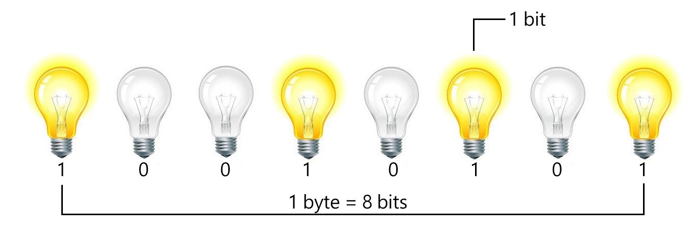
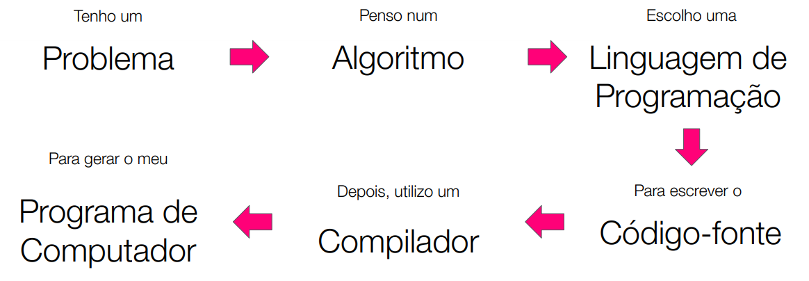

Rápida introdução à Ciência da Computação
- É sobre resolver problemas usando um computador!
- O computador precisa armazenar as informações (os dados de entrada e saída), mas como?
Usando memória! A memória do computador tem infinitos
transitores, que podem estar ligados (representado pelo número 1) ou desligados
(representado pelo número 0).
- Cada lâmpada abaixo representa um transitor:

1 Giga Byte = 1 trilhão de bytes = 8 trilhões de bits (transitores)
Sistema Binário
- A arte de escrever qualquer número usando apenas 1 e 0:
- Podemos guardar letras usando a tabela ASCII, que atribui cada
letra com um número, por exemplo:
a letra A é representada mundialmente pelo número 65 (01000001 em binário). Essa tabela
eventualmente ficou pequena, temos letras com diversos acentos, símbolos, até emojis são
guardados em uma nova tabela chamada Unicode.
- Para guardar uma imagem usamos o sistema RGB:
- Cada pixel contém 3 leds nas cores vermelho, verde e azul.
- Dependendo de quanto cada led esteja aceso, enxergaremos uma determinada cor.
- A intensidade de cada led vai de 0 a 255 e conseguimos guardar essas informações na
memória do computador através do código binário. Com a junção de centenas a milhares de
pixels, cada um com sua
intensidade RGB, formamos uma imagem.
Linguagens de Programação
- O computador é uma máquina capaz de armazenar dados e ser instruída a seguir uma sequência de
instruções automaticamente, mas o que isso significa?
- Quer dizer que o computador é capaz de executar
algoritmos:
- Algoritmo é um passo a passo para resolver um problema;
- É aí que entra a linguagem de programação, é com ela que o computador consegue entender
esse passo a passo.
- Mas o computador não entendia apenas o código binário? Ele não consegue ler apenas 1 e
0? Como ele vai entender essas linguagens de programação? É aí que entra os
compiladores.
- Todo código, que nós desenvolvedores escrevemos em determinada linguagem de programação,
é chamado de Código Fonte. Esse código ainda não é
compreendido pelo computador mas, uma vez compilado, nosso código torna-se
um Código Executável (não é exatamente os 1 e 0, mas é
um código bem próximo ao que o computador entende)
- Excelente livro sobre como funciona os compiladores: "Compilers: Principles,
Techniques and Tools" de Alfred V. Aho, Monica S. Lam, Ravi Sethi e Jeffrey D.
Ullman.
- Resumo de tudo o que vimos:
